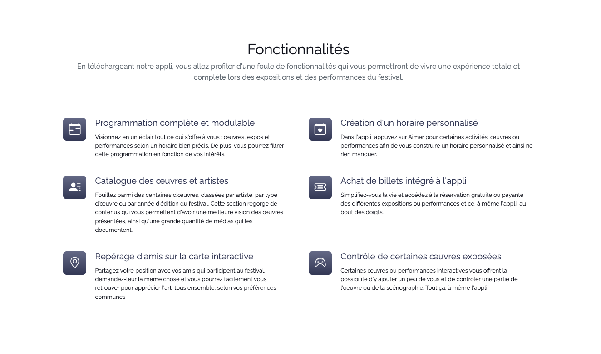
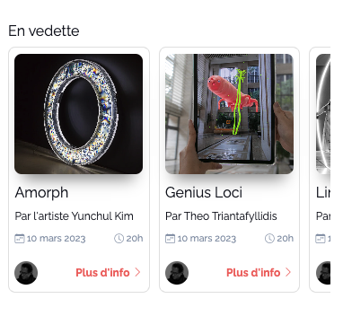
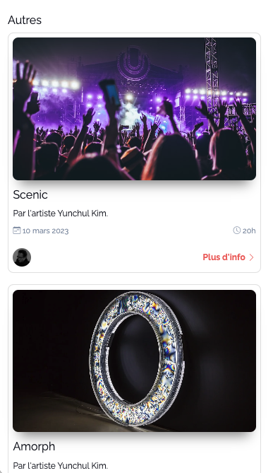

Note pour tous
JAMAIS d’attribut style dans le HTML. Soit vous utilisez les classes utilitaires Bootstrap, soit vous stylisez vous-même avec des classes custom, via votre feuille de styles. Suivez les instructions lorsqu'il est mentionné d'utiliser les classes utilitaires Bootstrap.
Requis individuel : Landing Page
Section Fonctionnalités
2 exemples de résultats possibles pour cette section (mais vous avez une certaine flexibilité) 👇


Bien que vous ayez préalablement designé votre page, vous devez tout de même suivre les instructions de ce devoir. Libre à vous par la suite d’ajouter les détails de votre maquette mais ces instructions-ci absolument doivent être suivies avant de personnaliser votre page (bref le résultat final doit conserver les instructions ci-bas).
Si ce n’est pas le cas, ajoutez votre section hero dans la balise main
Sous la section Hero, créez une 2e section, identifiez-la section-features. Ce sera la section qui présente les fonctionnalités de l’appli que vous présentez au public. Il y en a 6. Le texte à utiliser se trouve dans le wiki du cours 4 (groupe H2023). Pour créer cette section, utilisez la balise sémantique la plus appropriée. Sachez aussi que cette section fera office de rangée Bootstrap. Ajoutez les classes qui sont de mise.
Dans cette section ajouter un conteneur Bootstrap qui lui-même contiendra 2 rangées. Dans la première rangée, ajoutez un titre de niveau 2 nommé Fonctionnalités suivi d’un paragraphe qui introduit la section (les texte est disponible dans le wiki).
Dans la 2e rangée, créez 6 colonnes égales. Par défaut, les colonnes s’affichent sur toute la largeur de la rangée. À partir du breakpoint md, on verra 2 colonnes par rangée, et à partir du breakpoint lg, on verra 3 colonnes par rangée.
Dans chaque colonne, (commencez par la première et vous pourrez dupliquer lorsque complété), créez une carte Bootstrap. Chaque carte Bootstrap devra contenir le titre et la description de la fonctionnalité. Les cartes ne sont pas cliquables (elles ne mènent pas à une autre page ou autre section elles n’existe que pour présenter le contenu.
Va voir la documentation sur les icônes Bootstrap et installe le paquet d'icône via CDN, soit avec la balise link ou via @import dans le css, à ta guise.
Chaque carte Bootstrap devra accueillir une icône (icone Bootstrap). Utiliser la méthode Icon Font (voir documentation liée au point précédent).
Appliquez le style qui vous convient selon votre design ou vous avez aussi la possibilité d’explorer autre chose au niveau du style. Il faut que les carte sorte un peu du look classique avec le petit filet gris autour, amusez-vous à explorer les possibilités. Ce peut-être des carte horizontale (en 2 colonnes) ou verticale (icone, titre, texte, l’une en dessous de l’autre). À vous de voir !
Sur les rangée et les colonnes de la section actuelle, si vous souhaitez ajouter une marge en haut et en bas, ainsi que réduire la largeur les gouttières entre les colonnes, ajoutez les classes Bootstrap en conséquence.
Notes de cours 📚
Cartes
Permettent de générer rapidement et facilement des cartes
Utilitaires
Bootstrap dispose de nombreuses classes utilitaires/d'aide permettant de styliser rapidement les éléments sans utiliser de code CSS.
Grille
Système de grille Bootstrap pour un mise en page facile et réactive
Section Témoignages
Sous la section section-features, créez une 3e section, identifiez-la section-testimonials. Ce sera la section des témoignages de gens qui sont contents de l’appli.
Comme la section fonctionnalités, ajoutez deux rangées, la première contenant une titre Témoignages et un paragraphe qui présente la section.
Dans la 2e rangée, créez 6 colonnes de largeur identique. Par défaut, les colonnes s’affichent sur toute la largeur de la rangée. À partir du breakpoint sm, on verra 2 colonnes par rangée. À à partir du breakpoint lg, on verra 4 colonnes par rangée., donc la 2e rangée de carte témoignage n’en contiendra que 2, trouvez un moyen de les centrer dans leur propre rangé.
La carte contient une image de la personne qui témoigne, tout en haut, vous pouvez utiliser ce site pour aller chercher des “random user”. Prenez le temps de télécharger les images et les classer dans vos assets. Appliquez à l’image une hauteur à votre guise autour de height: 20vh; afin que sa dimension soit adaptable avec la dimension de l’écran (vh = view height). Positionnez l’image dans son cadre avec la propriété object-fit et object-position.
Sous l’image, le nom de la personne qui témoigne en tant que titre de la carte.
Note : n’oubliez pas d’ajouter les balises et classes nécessaires pour formatter une carte Bootstrap comme il se doit.
Sous le titre de la carte, ajoutez un témoigne de votre cru. Soyez sympa. 😊
Stylisez un peu les cartes. Je vous ajoute cependant ajoute un style obligatoire en ajoutant une des icônes “quote” de Boostrap, soit en arrière-plan, en haut ou au coin de la carte, en filigrane, un peu superposé ou autre idée de placement.
Sur toutes les sections de votre page (et il y en aura d’autres à venir), assurez-vous d’avoir un padding haut et bas assez large pour laisser respirer le contenu. Assurez-vous aussi que ce padding est constant de section en section. Utilisez les classes utilitaires Boostrap pour générer ce padding.
Assurez-vous aussi d’alterner la couleur de fond de chacune de vos section pour qu’on voit bien la séparation de chacune.
Notes de cours 📚
Cartes
Permettent de générer rapidement et facilement des cartes
Utilitaires
Bootstrap dispose de nombreuses classes utilitaires/d'aide permettant de styliser rapidement les éléments sans utiliser de code CSS.
Grille
Système de grille Bootstrap pour un mise en page facile et réactive
Requis individuel : Appli
Aperçu du résultat pour la section oeuvres en vedette👇

Dans la balise main, dans le container que vous avez précédemment créé, ajoutez une 3e section (sous les filtres). Cette section fera office de rangée Bootstrap. Ajoutez les classes qui sont de mise.
Ajoutez-lui un titre de niveau 2 nommé En vedette. Cette section, vous comprendrez, listera les œuvres mis en vedette par le festival d’art.
Sous le titre, créez 3 colonnes de largeur identique qui remplira la rangée.
Dans chaque colonne, (vous pouvez commencer par la première et ensuite faire un copier-coller dans les autres colonnes lorsque vous êtes satisfaits), créez-vous une carte Bootstrap. Cette carte sera appliquée non pas sur un div mais sur une balise a afin qu’elle soit complètement cliquable. Ces liens doivent mener vers la future page : artwork.html.
La carte contient une image de l’œuvre, tout en haut. Appliquez à l’image une hauteur de height: 20vh; afin que sa dimension soit adaptable avec la dimension de l’écran (vh = view height). Positionnez l’image dans son cadre avec la propriété object-fit et object-position.
Sous l’image, le titre de l’œuvre.
Note : n’oubliez pas d’ajouter les balises et classes nécessaires pour formatter une carte Bootstrap comme il se doit.
Sur une nouvelle ligne, ajoutez le mot “Par “ et le nom de l’artiste (s’il y en a plusieurs, séparez les noms par une virgule).
Sur une nouvelle ligne encore, grouper une icône de calendrier (icône Bootstrap) avec une date d’exposition et grouper une icône d’horloge (icône Bootstrap) avec une heure de performance. Les 2 groupes doivent s’afficher sur la même ligne, avec un espace maximal entre les 2. Utilisez les classes utilitaires Bootstrap pour positionner selon les consignes.
Sur une nouvelle ligne, ajoutez une vignette de la photo de l’artiste, s’il y en a plusieurs, affichez les vignettes de chaque artiste une à côté de l’autre. Sur cette même ligne, ajoutez un texte “Plus d’info” avec une icône de chevron (icône Bootstrap) qui pointe vers la droite. Les 2 élément (photo et plus d’info) doivent s’afficher sur la même ligne, avec un espace maximal entre les 2. Utilisez les classes utilitaires Bootstrap pour positionner selon les consignes.
Stylisez la carte comme vous le souhaitez par la suite, tant que les conditions précédentes sont remplies. Aussi ajoutez un effet hover sur la carte. Lorsque vous êtes satisfait, vous pouvez dupliquer la première carte dans les 2 autres colonnes et ajuster sontcontenu pour les différentes œuvres.
Donnez un id à cette section de la page et, dans votre feuille de style, affectez lui la largeur de 140%.
Les cartes de cette section spécifique, devront avoir une largeur maximum de 200px. Vous pouvez aussi réduire le padding à l’intérieur de celles-ci pour faire plus de place au contenu. Pour ce faire, vous pouvez aller écrire les styles directement dans votre feuille de style. Assurez-vous de ne cibler que les cartes de cette section.
Afin d’éviter que la section qui dépasse maintenant la page ne force une scrollbar horizontale, ajoutez la propriété css overflow-x: hidden; à la balise body.
Sur la rangée de la section actuelle, si vous souhaitez ajouter une marge en haut et en bas, ainsi que réduire la largeur les gouttières entre les colonnes, ajoutez les classes Bootstrap en conséquence.
Notes de cours 📚
Cartes
Permettent de générer rapidement et facilement des cartes
Utilitaires
Bootstrap dispose de nombreuses classes utilitaires/d'aide permettant de styliser rapidement les éléments sans utiliser de code CSS.
Grille
Système de grille Bootstrap pour un mise en page facile et réactive
Section autres oeuvres
Aperçu du résultat pour autres oeuvres👇

Dans la balise main, dans le container que vous avez précédemment créé, ajoutez une 4e section (sous la section des œuvres en vedette). Cette section fera office de rangée Bootstrap. Ajoutez les classes qui sont de mise.
Ajoutez-lui un titre de niveau 2 nommé Autres œuvres et performances. Cette section, vous comprendrez, listera de toutes les œuvres et performances qui ne sont pas en vedette.
Ajoutez une colonne qui s’affichera sur toute la largeur de la rangée.
Dans cette colonne, ajoutez 3 cartes, exactement configurées comme celle de la section précédente, cependant celle-ci n’auront pas de largeur maximale (donc le css que vous avez ajoutée aux cartes de la section précédente ne devrait pas affecter les cartes de cette section.
Appliquez à l’image de la carte une hauteur de height: 20vh; afin que sa dimension soit adaptable avec la dimension de l’écran (vh = view height). Positionnez l’image dans son cadre avec la propriété object-fit et object-position.
Ajustez le contenu de toutes vos cartes en y insérant les infos réelles 6 oeuvres que vous avez sélectionnées en équipes, soient 3 en vedette et 3 dans la section autres.
Notes de cours 📚
Cartes
Permettent de générer rapidement et facilement des cartes
Utilitaires
Bootstrap dispose de nombreuses classes utilitaires/d'aide permettant de styliser rapidement les éléments sans utiliser de code CSS.
Grille
Système de grille Bootstrap pour un mise en page facile et réactive